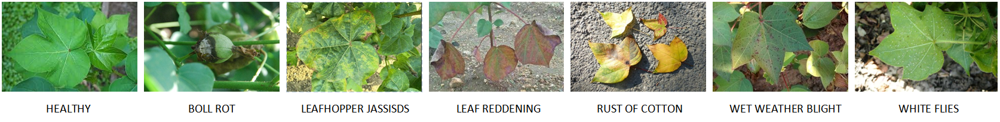

  
  <!-- 
NAME @: The Farmbot Project
TOPIC @: Cotton Leaf Disease Classification Model Deployment
DATE @: 09/06/2022 
-->

  
  <!-----------------------------  BASE SECTION  ----------------------------------->

{% extends "base.html"%}

  <!-------------------------------------------------------------------------------->

{% block content %}


  <!---------------------------  HOME BODY SECTION   ------------------------------>

<!-- Add a background color and large text to the whole page -->
<div class="   w3-pale-yellow  w3-large">

    <!-- About Container -->
    <div class="w3-container" id="about">

        <div class="w3-content" style="max-width:800px">

            <h5 class="w3-center w3-padding-32"><span class="w3-tag w3-wide">ABOUT THE PROJECT</span></h5>
            
            <h3>About the project : </h3>

            <br>

            <p> Diseases and pests take a huge toll on crops production contributing to agricultural losses. Pesticides and insecticides may prevent them but they degrade the crop health and quality. A better measure can be early detection and targeted action. This will require skilled humans in botany aware of diseases and pests and their symptoms. And think of hectic work involved in analysing each leaf of the crops. Computer Vision and Deep Learning can be applied to classify the diseases.
            </p>

            <br>

            <h3>Supported Cotton Diseases : </h3>

            <p>
                Out of various Cotton crop diseases we will be classifying only seven Cotton leaf diseases. The following diseases can be classified :
            </p>

            <style>
                .images-container {
                    display: flex;
                    justify-content: center;
                    align-items: center;
                }

                .images-container img {
                    height: 150px;
                    width: 750px;
                    margin-left: 5px;
                    margin-right: 5px;
                }
            </style>

            <div class="images-container" id="crop_images">
                
            </div>  

        </div>
    </div>

<br>
<br>

  <!-----------------------------  FORM SECTIOIN  ----------------------------------->

    <div class="w3-content" id="form1" style="max-width:800px">

    <center>
    <h1>Please upload the Cotton Leaf image below</h1>
    </center>
    <br>
    <hr>

    <form method="POST" enctype="multipart/form-data">
        {{ form.hidden_tag() }}
        {{ form.photo }}

        {% for error in form.photo.errors %}
            <span style="color:red;">{{ error }}</span>
        {% endfor %}
        {{ form.submit }}
    </form>

    </div>

  <!----------------------------------------------------------------------------->


</div>

{% endblock %}

  <!-----------------------------  THE END  ----------------------------------->